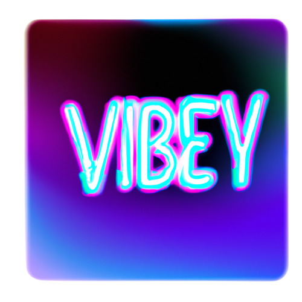

"Ile masz wzrostu?"
"Czy spałeś/aś kiedyś pod namiotem?"
"Kiedy ostatni raz skłamałeś/aś?"
"Kiedy ostatni raz płakałeś/aś?"
"Jaki jest twój najgorszy nawyk?"
"Co kupiłeś/aś, co było największą stratą pieniędzy?"
"Jak oceniasz swój wygląd w skali od 1 do 10?"
"Gdybyś mógł/mogła być jedną gwiazdą na jeden dzień, kto by to był?"
"Jakie jest Twoje wymarzone życie?"
"Co cenisz najbardziej – pieniądze, sławę, sukces, przyjaciół, rodzinę itp.?"
"Jaka jest najbardziej zawstydzająca rzecz, jaką kiedykolwiek zrobiłeś/aś?"
"Gdybyś nagle miał/a milion złotych, jak byś je wydał/a?"
"Czy kiedykolwiek sikałeś/aś pod prysznicem?"
"Jaki był najdziwniejszy sen, jaki miałeś/aś?"
"Jaka jest najdziwniejsza plotka, jaką o sobie usłyszałeś/aś?"
"Czy jesteś szczęśliwy/a?"
"Jakie jest najdziwniejsze kłamstwo, jakie kiedykolwiek powiedziałeś/aś?"
"Czy masz fałszywe konta w mediach społecznościowych?"
"Co cię gryzie?"
"Jaka jest najdziwniejsza rzecz, jaką kiedykolwiek jadłeś/aś?"
"Jakie jest dziwne jedzenie, które lubisz?"
"Jaki był Twój największy strach w dzieciństwie?"
"Czy masz jakieś fetysze? Jeżeli tak to jakie?"
"Jaka jest najgorsza rzecz, jaką kiedykolwiek zrobiłeś/aś?"
"Czy kiedykolwiek złamałeś/aś prawo?"
"Czy kiedykolwiek pozostałeś/aś z kimś przyjacielem tylko dlatego, że przyniosło ci to korzyści nie tylko samą przyjaźnią?"
"Kogo chciałbyś/abyś pocałować w tym pokoju?"
"Jaka jest najgorsza rzecz, jaką kiedykolwiek komuś powiedziałeś/aś?"
"Czy kiedykolwiek zostałeś/aś przyłapany na robieniu czegoś, czego nie powinieneś?"
"Jaka jest najgorsza randka, na której byłeś/aś?"
"Jaka jest najlepsza randka, na której byłeś?/aś"
"Czego najbardziej żałujesz?"
"Czy kiedykolwiek skłamałeś/aś, żeby uniknąć złej randki?"
"Jakie są największe kłopoty, w jakich się znalazłeś/aś?"
"Gdybyś mógł/ogła zamienić się życiem z kimś w tym pokoju, kto by to był?"
"Czy kiedykolwiek skłamałeś/aś na temat swojej najlepszej przyjaciółki/przyjaciela, żeby wyglądać lepiej?"
"Czy miałeś/aś kiedyś wakacyjny romans?"
"Co byś zrobił/a, gdybyś wiedział/a, że nie będzie to miało żadnych konsekwencji?"
"Co jest twoim największym strachem?"
"Jaka jest Twoja największa fantazja?"
"Kim jest ostatnia osoba, którą szukałeś/aś na Instagramie?"
"Kto był Twoją pierwszą gwiazdą, w której się zakochałeś/aś?"
"Jaki jest największy błąd, jaki kiedykolwiek popełniłeś?"
"Ile najwięcej wydałeś na wieczorne wyjście?"
"Jaki jest Twój najdziwniejszy pseudonim?"
"Jakie było Twoje najbardziej bolesne fizycznie doświadczenie?"
"Jaka jest najbardziej szalona rzecz, jaką zrobiłeś w transporcie publicznym?"
"Gdybyś spotkał/a dżina, jakie byłyby Twoje trzy życzenia?"
"Gdybyś mógł/a wybrać dowolną osobę na Ziemi na Prezydenta Rzecpospolitej Polski, kto by to był i dlaczego?"
"Co uwielbiasz robić ze swoimi przyjaciółmi, a czego nigdy nie zrobiłabyś/zrobiłabyś przy swoim partnerze?"
"O kogo jesteś najbardziej zazdrosny?"
"Czy kiedykolwiek udawałeś/aś, że jesteś chory/a, żeby wyjść z imprezy?"
"Ile selfie robisz dziennie?"
"Czy umówiłbyś/umówiłabyś się dzisiaj ze swoją sympatią?"
"Gdzie jesteś łaskotliwy/a?"
"Kiedy ostatni raz przeprosiłeś/aś?"
"Czy kiedykolwiek zastanawiałeś/aś się nad zdradą partnera?"
"Czy kiedykolwiek zdradziłeś/aś partnera?"
"Gdybyś miał/a gwarancję, że nigdy nie zostaniesz złapany/a, kogo byś zamordował/a?"
"Czy kiedykolwiek byłeś/aś nago w miejscu publicznym?"
"Jaki jest najmłodszy partner, z którym byś się umówił/a?"
"Czy kiedykolwiek dłubałeś/aś w nosie w miejscach publicznych?"
"Czy kiedykolwiek skłamałeś/aś na temat swojego wieku?"
"Gdybyś miał/a usunąć jedną aplikację ze swojego telefonu, która by to była?"
"Ile najdłużej nie brałeś/aś prysznica?"
"Czy kiedykolwiek posługiwałeś/aś się fałszywym dowodem osobistym?"
"Który z członków Twojej rodziny najbardziej Cię denerwuje i dlaczego?"
"Czego najbardziej się boisz w związku?"
"Co najbardziej denerwuje Cię w związku z osobą po Twojej lewej stronie?"
"Czy widziałeś/aś kiedyś zwłoki?"
"Która gwiazda jest według Ciebie przereklamowana?"
"Ile najdłużej nie myłeś/aś zębów?"
"Czego najbardziej żałujesz w życiu?"
"Kogo nie chciałbyś/abyś widzieć nago?"
"Czy zerwałbyś/abyś ze swoim partnerem za 1 milion złotych?"
"Jaki jest najmniejszy napiwek, jaki kiedykolwiek zostawiłeś/aś w restauracji?"
"Jakiej pracy nigdy nie mógłbyś/mogłabyś wykonać?"
"Co byś zrobił/a, gdybyś na jeden dzień zmienił płeć?"
"Ile aplikacji do edycji zdjęć masz na swoim telefonie?"
"Jakie są Twoje ulubione i najmniej ulubione części ciała?"
"Kiedy ostatni raz dostałeś/aś kosza?"
"Jaka jest najbardziej dziecinna rzecz, którą nadal robisz?"
"Kiedy ostatni raz komuś dałeś/aś kosza?"
"Gdybyś miał/a wybrać kogoś z tego pokoju na swojego partnera w teleturnieju, kto by to był i dlaczego?"
"Czy umówiłbyś/umówiłabyś się z kimś niższym od ciebie?"
"Czy kiedykolwiek okłamałeś/aś przyjaciela?"
"Kiedy ostatni raz doprowadziłeś/aś kogoś innego do płaczu?"
"Jaka jest najbardziej zawstydzająca rzecz, jaką zrobiłeś/aś przed tłumem?"
"Gdybyś mógł/mogła stać się niewidzialny, co byś zrobił/a?"
"Po upuszczeniu kawałka jedzenia, ile czasu najdłużej pozostawiłeś/aś go na podłodze, zanim go zjadłeś/aś?"
"Jaka jest jedna rzecz w twoim życiu, którą chciałbyś/chciałabyś zmienić?"
"Gdybyś mógł/mogła umówić się z dwiema osobami na raz, zrobiłbyś/zrobiłabyś to? Jeśli tak, to z kim?"
"Jaki był najwspanialszy dzień w Twoim życiu?"
"Jaka jest jedna bezużyteczna umiejętność, której tak czy inaczej chciałbyś/chciałabyś się nauczyć?"
"Gdybym przeszukał twoje szafki, jaka jest najdziwniejsza rzecz, jaką bym znalazł?"
"Czy kiedykolwiek pierdnąłeś/ęłaś i zwaliłeś/aś winę na kogoś innego?"
"Czy kiedykolwiek zezłościłeś/aś się na przyjaciela za opublikowanie Twojego niepochlebnego zdjęcia?"
"Kogo w tym pokoju wymieniłbyś/wymieniłabyś jako kontakt w nagłych wypadkach?"
"Kto był twoją pierwszą miłością?"
"Jakiego ostatniego zakupu żałowałeś/aś?"
"Czy kiedykolwiek wysłałeś/aś nudesa?"
"Czy kiedykolwiek wysłałeś/aś nudesa do niewłaściwej osoby? Jeżeli tak to kto to był??"
"Czy miałeś/aś ons?"
"Czy boisz się starzenia?"
"Co chcesz na swoim nagrobku?"
"Gdybyś miał/a tydzień życia i musiałbyś/musiałabyś poślubić kogoś w tym pokoju, kto by to był?"
"Jaki jest ostatni film, który sprawił, że płakałeś?/aś"
"Kiedy był twój pierwszy raz?"
"Kto był twoim pierwszym?"
"Kogo wezwałbyś/wezwałabyś do pomocy w pochowaniu ciała?"
"Kto by Cię wezwał do pomocy w pochowaniu ciała? Zrobiłbyś/abyś to?"
"Jaka jest ostatnia piosenka, która doprowadziła Cię do płaczu?"
"Jaka jest ostatnia rzecz, którą sprawdziłeś/aś w Google?"
"Jaka jest jedna rzecz, której nigdy nie zrobiłbyś/zrobiłabyś za wszystkie pieniądze świata?"
"Kto jest Twoją ulubioną osobą w Twojej najbliższej rodzinie?"
"Gdybyś do końca życia mógł/mogła usłyszeć tylko jedną piosenkę, co by to było?"
"Jaki był ostatni film na YouTube, który oglądałeś/aś?"
"Jaki jest najtwardszy narkotyk, jakiego kiedykolwiek próbowałeś/aś?"
"Kiedy ostatni raz sikałeś/aś w spodnie?"
"Do kogo w tym pokoju zadzwoniłbyś/zadzwoniłabyś, gdybyś był/a w więzieniu?"
"Do kogo najczęściej piszesz wiadomości w toalecie?"
"Jaka jest najbardziej szalona rzecz, jaką kiedykolwiek zrobiłeś/aś w kinie?"
"Jaka jest najbardziej szalona rzecz, która przydarzyła ci się w centrum handlowym?"
"Jak długo trwał twój najdłuższy związek?"
"Czy kiedykolwiek byłeś/aś aresztowany/a?"
"Kto jest najbardziej zaskakującą osobą, która kiedykolwiek wpadła na Twoje DM?"
"Jakie jest jedno miejsce, które chciałbyś/chciałabyś odwiedzić?"
"Jakiego słowa najbardziej nienawidzisz?"
"Jaka jest najbardziej zawstydzająca rzecz, jaką kiedykolwiek opublikowałeś/aś w mediach społecznościowych?"
"Gdybyś mógł/mogła zatrudnić kogoś, aby zrobił dla ciebie jedną rzecz, co by to było?"
"Kogo ostatni raz stalkowałeś/aś?"
"Jakie jest Twoje najbardziej zawstydzające wspomnienie z dzieciństwa?"
"Jaka jest najbardziej szalona rzecz, jaką zrobiłeś/aś, aby uniknąć mandatu?"
"Jak myślisz, co się stanie, kiedy umrzesz?"
"Kiedy ostatni raz oglądałeś/aś film dla dorosłych?"
"Czy kiedykolwiek brałeś/aś udział w bójce?"
"Czy poślubiłbyś/poślubiłabyś kogoś bogatego, nawet gdybyś go nie kochał/a?"
"Jaka jest najgorsza rada, jaką kiedykolwiek dałeś/aś komuś innemu?"
"Jaka jest najdziwniejsza rzecz, którą robisz podczas jazdy?"
"Kiedy ostatni raz chciałeś/aś kogoś uderzyć?"
"Jaki był największy dowcip, jaki kiedykolwiek komuś zrobiłeś/aś?"
"Jaka jest jedna rzecz u Twojego partnera, którą uważasz za najmniej atrakcyjną?"
"Kiedy ostatni raz byłeś/aś naprawdę zły/a? Dlaczego?"
"Czy kiedykolwiek zdecydowałbyś/zdecydowałabyś się na operację plastyczną?"
"Czy kiedykolwiek doświadczyłeś/aś stanu bliskiego śmierci?"
"Jaką umiejętność chciałbyś/chciałabyś mieć?"
"Kim była ostatnia osoba, do której powiedziałeś: „Kocham cię"?"
"Czy kiedykolwiek złamałeś/aś komuś serce?"
"Czy kiedykolwiek zwymiotowałeś/aś w miejscu publicznym?"
"Czy kiedykolwiek poważnie zraniłeś/aś inną osobę?"
"Kiedy przestałeś/aś wierzyć w Świętego Mikołaja?"
"Czy kiedykolwiek upiłeś/aś się i straciłeś/aś przytomność?"
"Czy wierzysz w kosmitów?"
"Jaka jest najdziwniejsza rzecz, jaką kiedykolwiek powiedziałeś/aś nieznajomemu?"
"Komu w tym pokoju najmniej ufasz?"
"Jaki był najbardziej nieodpowiedni moment, w którym się śmiałeś/aś?"
"Jaki jest Twój najlepszy sposób na podryw?"
"Jaki jest twój najbardziej obskurny tekst na podryw?"
"Jakie jest najdziwniejsze miejsce, w którym kiedykolwiek dałeś/aś lub dostałeś/aś komuś numer?"
"Czy kiedykolwiek powiedziałeś/aś: „Kocham cię”, choć tak naprawdę nie miałeś/aś tego na myśli? Do kogo?"
"Jakie jest Twoje najmniej ulubione wspomnienie ze szkoły podstawowej?"
"Jaki jest najgorszy prezent, jaki ktoś Ci kiedykolwiek dał?"
"Czy kiedykolwiek zakochałeś/aś się w szefie lub nauczycielu?"
"Jaki jest najgorszy prezent, jaki kiedykolwiek dałeś/aś komuś innemu?"
"Jaka była najdziwniejsza myśl, jaką miałeś/aś, siedząc w toalecie?"
"W czym się wstydzisz, że jesteś dobry/a?"
"Jaki był Twój najbardziej upokarzający moment?"
"Kogo zabrałbyś/zabrałabyś ze sobą na bezludną wyspę?"
"Czy kiedykolwiek zostałeś/aś wyrzucony z pracy?"
"Czy kiedykolwiek pozwoliłeś komuś wziąć na siebie winę za coś, czego nie zrobiłeś/aś?"
"Co dziwnego robisz we śnie?"
"Z czego jesteś najbardziej dumny/a w swoim życiu?"
"Gdybyś ratował/a ludzi z płonącego budynku i musiałbyś/musiałabyś zostawić jedną osobę w tym pomieszczeniu, kto by to był?"
"Co najbardziej może cię zniechęcić do innej osoby?"
"Możesz wybrać jedną supermoc. Co wybierasz?"
"Jaka chwila w twoim życiu była najbardziej żenująca?"
"Kto jest najbardziej atrakcyjny w szkole lub pracy?"
"Kto jest najbardziej denerwującą osobą, jaką znasz?"
"Gdybyś jeszcze raz się urodził/a, kim byś był/a?"
"Która z obecnych tu osób miałaby największy problem z dochowaniem tajemnicy?"
"Przez jak długi czas udało ci się wytrzymać bez mycia?"
"Jaka była najbardziej kłopotliwa sytuacja, która przytrafiła ci się w miejscu publicznym?"
"Gdybyś musiał/a wybrać rozum albo urodę, co byś wybrał/a?"
"Jaką najgłupszą rzecz zrobiłeś/łaś po pijanemu?"
"Czy całowanie kogoś innego niż twój partner to zdrada?"
"Co sprawia, że czujesz zazdrość?"
"Gdybyś do końca życia mógł/mogła jeść tylko jeden posiłek, co by to było?"
"Gdyby Twój dom się zapalił i mógłbyś/mogłabyś uratować tylko trzy rzeczy (oprócz ludzi), co by to było?"
"Możesz wybrać jedną supermoc. Co wybierasz?"
"O jakiej postaci z kreskówek kiedykolwiek marzyłeś/aś?"
"Najgorsza rzecz, którą powiedziałeś/aś publicznie?"
"Jakie było najbardziej obrzydliwe jedzenie, jakie kiedykolwiek jadłeś/aś?"
"Czy zrobiłbyś trójkąt?"
"Jaka była najbardziej wstydliwa rzecz, którą zrobiłeś po pijanemu?"
"Czy kiedykolwiek związałeś/aś się z wieloma osobami tej samej nocy?"
"Na którą partię polityczną głosujesz?"
"Jak wyglądałaby idealna randka?"
"Kiedy ostatnio zwymiotowałeś?"
"Czy chciałbyś/chciałabyś wziąć ślub?"
"Miałeś/aś kiedyś złamane serce?"
"Jak opisałbyś/opisałabyś siebie w trzech słowach?"
"Kto jest twoim największym wzorem do naśladowania?"
"Co cię najbardziej przeraża w dorosłym życiu?"
"Gdybyś mógł/mogła spotkać się z kimś martwym, kto by to był?"
"Do kogo w tym pokoju chcesz się zbliżyć?"
"Gdzie widzisz siebie za 10 lat?"
"Co robisz, gdy budzisz się rano?"
"Którą markę lub artystę kochają wszyscy, a ty po cichu jej nienawidzisz?"
"Jaki jest najgorszy ból emocjonalny, jakiego doświadczyłeś/aś?"
"Kiedy ostatnio byłeś/aś zazdrosny?"
"Kogo chciałabyś/chciałabyś poślubić?"
"Jakie są twoje trzy ulubione kolory i dlaczego?"
"Jakie jest Twoje ulubione jedzenie?"
"Gdyby nie było czegoś takiego jak pieniądze, co byś zrobił ze swoim życiem?"
"Jakie są Twoje wymarzone wakacje?"
"O czym marzysz najbardziej?"
"Jakie było największe kłamstwo, jakie kiedykolwiek powiedziałeś/aś rodzicom?"
"Ściągałeś/aś kiedyś na teście?"
"Masz jakieś sekrety?"
"Kto jest twoim najlepszym przyjacielem?"
"Jak opisałabyś swoje relacje z rodzicami?"
"Jakie myśli nie pozwalają ci spać w nocy?"
"Jaki jest Twój ulubiony film?"
"Jaki jest Twój ulubiony serial?"
"Dlaczego twój ostatni związek się skończył?"
"Jaki jest twój największy lęk?"
"Wierzysz w miłość od pierwszego wejrzenia?"
"Byłeś/aś kiedyś zakochany/a?"
"Straciłeś/aś kiedyś przyjaciela?"
"Czy kiedykolwiek spałeś/aś pod gwiazdami?"
"Jaka jest najśmieszniejsza rzecz, jaką powiedzieli dziadkowie?"
"Jaka jest Twoja ulubiona gra planszowa?"
"Czy korzystałeś/aś z portali randkowych? Jakich?"
"Jaki jest Twój ulubiony rodzaj orzechów?"
"Jakie lubisz kwiaty?"
"Czy kupowałeś/aś podrabiane ubrania/buty?"
"O czym teraz myślisz?"
"Jakie jest Twoje ulubione miejsce do spędzania wolnego czasu?"
"Ile masz znajomych na Facebooku?"
"Jeśli będziesz mieć swój biznes – co to będzie?"
"Czy zasnąłeś kiedyś na zajęciach?"
"Czy kiedykolwiek śnił/a ci się? (Grupa wybiera imię)"
"Jak wyglądał Twój ostatni sen?"
"Zdradzać czy być zdradzanym?"
"Jaką ostatnią rzecz robisz przed snem?"
"Czy żałujesz, że powierzyłeś komuś z graczy swoją tajemnice?"
"Kto z obecnych jest najładniejszy?"
"Ktoś z obecnych kiedyś Ci się podobał?"
"Patrzysz w pierwszej kolejności na wygląd czy charakter?"
"Co bardziej cenisz: szczerość czy lojalność?"
"Wolisz spędzać czas w górach czy nad morzem?"
"Czy masz jakieś ukryte talenty?"
"Jak wygląda Twój idealny dzień?"
"Czy wierzysz w przeznaczenie?"
"Co motywuje Cię do działania?"
"Kto jest Twoim największym autorytetem?"
"Czy lubisz podejmować ryzyko?"
"Wolisz kino czy teatr?"
"Gdybyś mógł mieszkać w dowolnym miejscu na świecie, gdzie by to było?"
"Jaka jest Twoja ulubiona książka lub film?"
"Czy wolisz pracować samodzielnie czy w grupie?"
"Co jest dla Ciebie najważniejsze w życiu?"
"Jakie jest Twoje największe marzenie?"
"Czy masz jakieś ulubione miejsce, które chętnie odwiedzasz?"
"Co robisz, żeby się zrelaksować po ciężkim dniu?"
"Jaka jest Twoja ulubiona potrawa?"
"Wolisz spędzać czas z książką czy przed ekranem?"
"Czy lubisz uczyć się nowych rzeczy?"
"Jakie jest Twoje ulubione wspomnienie z dzieciństwa?"
"Czy masz jakieś hobby, które Cię pasjonuje?"
"Czy wierzysz w życie pozaziemskie?"
"Wolisz plany czy spontaniczność?"
"Co byś zrobił, gdybyś wygrał na loterii?"
"Jaki jest Twój największy sukces?"
"Czy jest coś, czego się boisz?"
"Jakie są Twoje trzy najważniejsze wartości w życiu?"
"Czy lubisz podróżować?"
"Czy masz jakieś ulubione zwierzę?"
"Jakie jest Twoje podejście do technologii?"
"Wolisz poranki czy wieczory?"
"Czy lubisz święta?"
"Jak radzisz sobie z trudnymi sytuacjami?"
"Co robisz, gdy masz wolny weekend?"
"Jakie są Twoje ulubione zajęcia sportowe?"
"Czy wolisz ciepłe czy chłodne klimaty?"
"Jakie są Twoje plany na najbliższy rok?"
"Czy często korzystasz z mediów społecznościowych?"
"Jaki był Twój najbardziej niezapomniany dzień?"
"Czy lubisz muzykę? Jeśli tak, to jaką?"
"Wolisz mieszkać w mieście czy na wsi?"
"Jakie masz podejście do ekologii?"
"Czy wierzysz w horoskopy?"
"Czy lubisz eksperymentować w kuchni?"
"Jaki jest Twój ulubiony sposób na spędzanie wakacji?"
"Co cenisz najbardziej w przyjaźni?"
"Czy często myślisz o przyszłości?"
"Wolisz plany krótko- czy długoterminowe?"
"Jakie jest Twoje ulubione święto?"
"Czy lubisz czytać biografie?"
"Czy wolisz być liderem czy członkiem zespołu?"
"Jakie masz podejście do zdrowego stylu życia?"
"Czy masz jakiś cytat, który Cię inspiruje?"
"Co uważasz za swój największy talent?"
"Jakie jest Twoje ulubione danie na specjalne okazje?"
"Czy często oglądasz filmy dokumentalne?"
"Jakie masz podejście do zmian w życiu?"
"Czy lubisz zwiedzać muzea i galerie sztuki?"
"Jaka jest Twoja ulubiona pora roku?"
"Jakie miejsce chciałbyś odwiedzić w najbliższym czasie?"
"Czy lubisz gry planszowe?"
"Jaki jest Twój ulubiony rodzaj muzyki?"
"Czy wolisz domowe jedzenie czy restauracyjne?"
"Jakie są Twoje największe osiągnięcia zawodowe?"
"Czy lubisz spontaniczne wycieczki?"
"Jakie jest Twoje ulubione zajęcie w wolnym czasie?"
"Czy wierzysz w siłę pozytywnego myślenia?"
"Jakie są Twoje plany na weekend?"
"Czy masz ulubioną grę komputerową?"
"Co chciałbyś zmienić w swoim życiu?"
"Jakie masz podejście do nauki języków obcych?"
"Czy lubisz oglądać seriale?"
"Jakie są Twoje priorytety na najbliższy rok?"
"Czy wolisz planować z wyprzedzeniem czy działać na bieżąco?"
"Jakie są Twoje ulubione sporty zimowe?"
"Czy lubisz poznawać nowych ludzi?"
"Jakie masz podejście do minimalizmu?"
"Czy często chodzisz na koncerty?"
"Jakie jest Twoje ulubione hobby z dzieciństwa?"
"Czy wierzysz w reinkarnację?"
"Jakie masz podejście do pracy zdalnej?"
"Czy wolisz oglądać filmy w domu czy w kinie?"
"Jakie są Twoje ulubione aktywności na świeżym powietrzu?"
"Czy lubisz eksperymentować z modą?"
"Jaki jest Twój ulubiony gatunek literacki?"
"Czy wolisz spędzać czas w domu czy na zewnątrz?"
"Jakie masz podejście do nauki przez całe życie?"
"Czy często uczestniczysz w wydarzeniach kulturalnych?"
"Jakie jest Twoje ulubione miejsce do relaksu?"
"Czy wierzysz w magię?"
"Jakie masz podejście do oszczędzania pieniędzy?"
"Czy lubisz zmiany w swoim życiu?"
"Jakie są Twoje ulubione słodycze?"
"Czy wolisz aktywny wypoczynek czy leniuchowanie?"
"Jakie jest Twoje podejście do sztuki nowoczesnej?"
"Czy wierzysz w miłość od pierwszego wejrzenia?"
"Jakie są Twoje plany na rozwój osobisty?"
"Czy lubisz robić zdjęcia?"
"Jakie jest Twoje podejście do medytacji?"
"Czy często oglądasz transmisje sportowe?"
"Jaka jest Twoja najskrytsza seksualna fantazja, której nigdy nie spełniłeś/aś?"
"Czy wolałbyś/aś być dominantem czy submisywem?"
"Którą część ciała uważasz za najbardziej erogenną?"
"Gdybyś mógł/mogła spędzić noc z dowolną osobą, kim by to był/a?"
"Jaka była Twoja najbardziej szalona noc?"
"Czy kiedykolwiek uprawiałeś/aś seks w miejscu publicznym?"
"Jaki jest Twój ulubiony sposób na podrywanie?"
"Którą część ciała uważasz za najbardziej atrakcyjną u płci przeciwnej?"
"Gdybyś mógł/mogła zmienić jedną rzecz w swoim ciele, co by to było?"
"Gdybyś miał/miała do wyboru seks z kimkolwiek, ale musiałbyś/musiałabyś zrobić coś bardzo głupiego, co by to było?"
"Gdybyś mógł/mogła spędzić noc z bohaterem/bohaterką ulubionego filmu, kim by to był/a?"
"Wolisz seks szybki i namiętny, czy powolny i romantyczny?"
"Jaka jest Twoja ulubiona pozycja seksualna?"
"Czy wolisz seks w świetle świec, czy przy zapalonym świetle?"
"Jaki zapach najbardziej Cię podnieca?"
"Jak wyobrażasz sobie swoją idealną noc poślubną?"
"Ile dzieci chciałbyś/chciałabyś mieć i jak wyobrażasz sobie swoją rodzinę?"
"Jaką odzież bielizny uważasz za najbardziej seksowną?"
"Gdybyś mógł/mogła spędzić noc w dowolnym miejscu na świecie, gdzie by to było i z kim?"
"Jaka jest najbardziej szalona rzecz, jaką chciałbyś/chciałabyś zrobić w łóżku?"
"Czy kiedykolwiek fantazjowałeś/fantazjowałaś o trójkącie?"
"Jaki jest Twój ulubiony rodzaj seksownej bielizny?"
"Czy wolałbyś/aś być obserwowanym/obserwowaną podczas seksu, czy raczej być obserwatorem?"
"Jaka jest Twoja ulubiona pozycja seksualna, której nigdy nie próbowałeś/aś?"
"Czy kiedykolwiek używałeś/aś seks-zabawek?"
"Jaki jest Twój ulubiony film erotyczny?"
"Czy masz jakieś ukryte talenty seksualne?"
"Jaka jest Twoja ulubiona pora dnia na seks?"
"Czy kiedykolwiek flirtowałeś/flirtowałaś z kimś, kto był już w związku?"
"Jaka jest Twoja największa fantazja związana z kimś, kogo znasz?"
"Czy kiedykolwiek uprawiałeś/aś seks pod prysznicem lub w wannie?"
"Czy wierzysz w miłość od pierwszego wejrzenia, a może raczej w pożądanie?"
"Czy uważasz, że zazdrość może być pozytywnym uczuciem w związku?"
"Czy uważasz, że seks może być sztuką?"
"Czy uważasz, że monogamia jest przestarzałym pojęciem?"
"Czy uważasz, że seks bez zobowiązań może prowadzić do głębszego uczucia?"
"Gdybyś mógł/mogła spędzić noc w luksusowym hotelu, jakie usługi dodatkowe zamówiłbyś/zamówiłabyś?"
"Jaki jest Twój najdziwniejszy fetysz?"
"Czy kiedykolwiek fantazjowałeś/fantazjowałaś o tym, żeby być gwiazdą porno?"
"Czy chciałbyś/chciałabyś kiedyś spróbować cosplayu erotycznego?"
"Czy kiedykolwiek używałeś/aś aplikacji randkowych? Jakie miałeś/miałaś doświadczenia?"
"Jaki jest Twój ulubiony zapach perfum lub kosmetyków?"
"Czy wolałbyś/aś być zaskoczony/zaskoczona podczas seksu, czy raczej wszystko dokładnie zaplanować?"
"Czy kiedykolwiek flirtowałeś/flirtowałaś z nauczycielem/nauczycielką?"
"Czy kiedykolwiek napisałeś/napisałaś erotyczny wiersz lub opowiadanie?"
"Czy uważasz, że wiek ma znaczenie w relacjach seksualnych?"
"Jaką niespodziankę chciałbyś/chciałabyś dostać od partnera/partnerki?"
"Jakie są Twoje największe oczekiwania wobec związku?"
"Jaka jest Twoja najbardziej odważna seksualna przygoda, o której możesz opowiedzieć?"
"Jaki dźwięk najbardziej Cię podnieca?"
"Jakie są Twoje największe obawy związane z seksem?"
"Pokaż najbardziej żenujące zdjęcie na swoim telefonie"
"Niech reszta grupy napisze DM do kogoś z Twojego konta na Instagramie"
"Wypij alkohol, stojąc na rękach."
"Żongluj 3 jajkami."
"Wykonaj z osobą naprzeciwko taczki i przejdzcie 10m"
"Wykonaj karykaturę osoby po prawej stronie"
"!NIE CZYTAJ NA GŁOS! Udawaj pominięcie rundy i po chwili zacznij udawać drgawki"
"Wyzeruj puszkę piwa poprzez zrobioną dziurkę od dołu puszki"
"Zrób 10 pompek"
"Odegraj scenę z ulubionego filmu, aż ktoś zgadnie co to za film."
"Przenieś na rękach jednego z graczy po całym pokoju."
"Udawaj innego gracza i poproś grupę, żeby zgadła, kogo udajesz."
"Zadzwoń do nieznajomej osoby i upieraj się, że to ona pierwsza do ciebie zadzwoniła."
"Zamień się jednym elementem ubrania z osobą po twojej prawej."
"Przeczytaj na głos ostatnią wiadomość, jaką dostałeś/aś."
"Udawaj zwierzę wybrane przez grupę."
"Pocałuj wszystkich w policzek."
"Poproś sąsiada o rolkę papieru toaletowego."
"Okręć się szybko dookoła 10 razy, a następnie spróbuj iść w linii prostej."
"Zacznij lizać swój nos."
"Daj jakiemuś graczowi swój telefon i pozwól mu wysłać jedną wiadomość do każdej osoby z twojej listy kontaktów."
"Poliż klamkę."
"Zaproś na randkę osobę, którą wyznaczy osoba po Twojej prawej."
"Wybierz jedną osobę i wąchaj jej stopy przez 10 sekund."
"Zamknij oczy. Grupa włoży Ci coś jadalnego do buzi, a ty to połknij."
"Otwórz okno i głośno zaśpiewaj hymn narodowy!"
"Wyślij SMS-a o treści: „Jaki masz problem?” do ostatniego wybranego numeru."
"Załóż wszystkie swoje ubrania na lewą stronę."
"Wyjdź na zewnątrz i przytul pierwszą osobę, którą zobaczysz."
"Pozwól osobie obok przejrzeć wszystkie zdjęcia na twoim telefonie."
"Zatańcz z osobą po twojej prawej do piosenki wybranej przez innych."
"Zachowuj się jak pies i zaaportuj trzy razy."
"Wykonaj 100 przysiadów."
"Pokaż nam czas spędzony przed telefonem."
"Trzymaj trzy kostki lodu w ustach, aż się rozpuszczą"
"Wykrzycz pierwsze słowo, które przyjdzie Ci na myśl"
"Miej oczy zamknięte przez 10 minut."
"Opróżnij portfel/torebkę i pokaż wszystkim, co jest w środku."
"!NIE CZYTAJ NA GŁOS! Udawaj, że jesteś osobą po Twojej prawej stronie przez 10 minut."
"Zjedz przekąskę bez użycia rąk."
"Szepnij sekret osobie po lewej stronie."
"Powiedz dwie szczere rzeczy o wszystkich osobach w grupie."
"Opowiedz najsmutniejszą historię, jaką znasz."
"Nałóż makijaż bez lusterka i zostaw go tak do końca gry."
"Podaj drinka osobie po prawej stronie."
"Zjedz pięć łyżek wybranej przyprawy."
"Udawaj, że jesteś wybranym przez siebie produktem spożywczym."
"Zjedz surowy kawałek czosnku."
"Zatańcz taniec na kolanach wybranej przez Ciebie osobie."
"!NIE CZYTAJ NA GŁOS! Powtarzaj wszystko, co mówi osoba po twojej prawej stronie, aż znowu nadejdzie twoja kolej"
"Polub pierwsze 15 postów w swoim kanale aktualności na Facebooku."
"Zjedz łyżkę musztardy."
"Uwodzicielsko zjedz banana"
"Zrób swoje najlepsze seksowne czołganie."
"Tweerkuj przez minutę."
"!NIE CZYTAJ NA GŁOS! Spróbuj rozśmieszyć grupę tak szybko, jak to możliwe."
"Pozwól innej osobie w grupie poprawić Twój makijaż."
"Przez 15 minut rozmawiaj z amerykańskim akcentem."
"Graj na niewidzialnej gitarze przez 2 minuty bez przerwy."
"Wyj jak wilk przez dwie minuty."
"Tańcz bez muzyki przez dwie minuty."
"Taniec na rurze z wyimaginowaną rurą."
"Pozwól komuś innemu Cię połaskotać i spróbuj się nie śmiać."
"Wypij drinka."
"Spróbuj rozpłakać się przed grupą."
"Spróbuj udawać wszystkich w pokoju."
"Napełnij usta napojem i odpowiedz na następne pytanie."
"!NIE CZYTAJ NA GŁOS! Spraw, aby w ciągu następnych 10 minut inny gracz skoczył."
"Spróbuj pierwszego tańca TikTok w zakładce dla ciebie."
"!NIE CZYTAJ NA GŁOS! Spróbuj się nie śmiać przez następne 10 minut."
"!NIE CZYTAJ NA GŁOS! Przez następne 10 minut za każdym razem, gdy ktoś Cię o coś zapyta, odpowiadaj szczekaniem."
"Zadzwoń do pierwszej osoby z kontaktów i wyj jak wilk."
"Pozwól osobie obok Ciebie depilować Cię, gdziekolwiek chce."
"Wykonaj Cynamon Challenge."
"Zacznij śpiewać Mniej niż zero"
"Opowiedz o lasach równikowych jak czytnik wiadomości w następnej rundzie"
"!NIE CZYTAJ NA GŁOS! Przez następne 10 minut mów wszystko szeptem."
"Zrób zdjęcie grupowe w stylu (S Club 7 z początku XXI wieku)."
"Pozwól komuś innemu w grupie zawiązać Ci oczy i nakarmić Cię jednym produktem z lodówki."
"Wlej do kubka 10 różnych dostępnych napoji i wypij."
"Spróbuj włożyć całą pięść do ust."
"Spróbuj polizać łokieć."
"Poczuj zapach pod pachą innego gracza."
"Nałóż jak najwięcej warstw w 30 sekund."
"Uśmiechnij się tak szeroko, jak tylko potrafisz i przytrzymaj go przez dwie minuty."
"Zjedz surowe jajko."
"!NIE CZYTAJ NA GŁOS! Przez następne 10 minut usiądź w rogu pokoju, nie odzywając się do nikogo."
"Zjedz łyżkę czarnego pieprzu."
"Przez minutę chodź po pokoju jak kurczak."
"Przeczytaj ostatnią sprośną wiadomość, którą wysłałeś/aś."
"Powiedz coś sprośnego osobie po lewej stronie."
"Opublikuj najstarsze selfie ze swojego telefonu w Instagram Stories."
"Przewijaj książkę telefoniczną, aż ktoś powie stop. Musisz do tej osoby zadzwonić."
"Powiedz grupie 1 prawdziwą informacje i 2 kłamstwa, a reszta muszi zgadnąć, które z nich jest prawdą."
"Odpowiedz na pierwsze pięć relacji na Instagramie na swojej osi czasu."
"Zadzwoń do swojej sympatii."
"Pij sok z cytryny."
"Rozbij jajko na głowie."
"Zamień się ubraniami z osobą płci przeciwnej na 2 rundy."
"Wybekaj alfabet."
"Zadzwoń do przyjaciela, udawaj, że są jego urodziny i zaśpiewaj mu Sto lat."
"Tańcz balet."
"Zrób selfie w toalecie i opublikuj je."
"Zakończ każde zdanie słowem „nie” aż do następnej tury."
"Załóż opaskę na oczy i dotykaj twarzy innych graczy, aż zorientujesz się, kto to jest."
"Udawaj wiewiórkę do swojej następnej tury."
"Wylej na głowę wiadro zimnej wody."
"Poliż kostkę mydła."
"Rozmawiaj bez otwierania ust."
"Masz 5 minut na napisanie piosenki country i jej wykonanie."
"Pozwól komuś pomalować Twoje paznokcie w dowolny sposób."
"Zrób 5 minut stand-upu."
"Kwakaj jak kaczka aż do następnej tury."
"Pozwól innej osobie opublikować notatkę na Twoim instagramie."
"Zjedz kawałek skórki od banana."
"Naśladuj gwiazdę TikTok, dopóki inny gracz nie zgadnie, kogo reprezentujesz."
"Wyślij emoji serca do relacji na Instagramie swojej sympatii."
"Pozwól innej osobie narysować tatuaż na plecach."
"Wyjdź na zewnątrz i spróbuj „przywołać” deszcz tak głośno, jak to możliwe."
"Pozwól innemu graczowi stworzyć czapkę z papieru toaletowego – a ty musisz ją nosić przez resztę gry."
"Wykonuj deskę przez pełną minutę."
"Zademonstruj, jak stylizujesz włosy przed lustrem (bez użycia lustra)."
"Zrób karaoke do wybranej przez grupę piosenki."
"Śpiewaj jak śpiewak operowy, zamiast mówić przez następne pięć minut."
"Przeczytaj na głos najbardziej osobistą wiadomość, którą wysłałeś/aś w ostatnich dniach."
"Zatykaj nos podczas śpiewania refrenu swojej ulubionej piosenki."
"Tańcz przez 30 sekund do piosenki Snoop Dogga."
"Zrób najbrzydszą minę, jaką możesz."
"Przeklinaj jak marynarz przez 30 sekund bez przerwy."
"Nagraj, jak śpiewasz piosenkę i opublikuj ją w swojej relacji w mediach społecznościowych."
"Napisz do osoby, z którą nie rozmawiałeś od roku."
"Wyślij mamie SMS-a „Nie uwierzysz, co się właśnie stało” i podziel się odpowiedzią."
"Wyślij wiadomość głosową, w której śpiewasz Miley Cyrus."
"Wyślij emoji serca w odpowiedzi na story swojej sympatii na Instagramie."
"Wyślij zdjęcie swojego najbardziej odlotowego stroju."
"Nagraj wideo, jak otwierasz okna i śpiewasz tak głośno, jak tylko potrafisz."
"Umyj zęby masłem orzechowym."
"Wyślij SMS-a o losowym numerze i zrób selfie."
"Pocałuj psa w usta."
"Hoola Hoop przez 10 minut bez przerwy."
"Przygotuj koktajl dla wszystkich w grupie."
"Wykonaj 50 pompek."
"Skacz jak najwyżej przez minutę."
"Napisz list miłosny składający się z maksymalnie 10 słów."
"Zrób bukiet dzikich kwiatów, składający się wyłącznie z kwiatów na podwórku."
"Zrób to emoji 🤪."
"Wyraź swoją miłość za pomocą języka migowego."
"Zjedz babeczkę w najbardziej zalotny sposób."
"Zadzwoń pod losowy numer i udawaj inną osobowość."
"Zatańcz makarenę."
"Przez resztę kolejki mów głosem płci przeciwnej."
"Szturchnij kogoś losowo i odejdź."
"Zrób breakdance."
"Pogłaskaj kogoś tak, jakby był psem."
"Pokaż najgłupsze zdjęcie z dzieciństwa."
"Zadzwoń do losowej osoby i po prostu „miaucz” do telefonu."
"Nałóż tusz do rzęs na osobę obok ciebie."
"Zaklej usta taśmą na 2 rundy."
"Pozwól wszystkim w grupie rysować na Twoim ramieniu."
"Owiń ciało papierem toaletowym jak mumia."
"Szczekaj na psa."
"Pokaż wyraz twarzy, jaki robisz po zjedzeniu czegoś bardzo kwaśnego."
"Odtwórz najgorszą randkę, na jakiej kiedykolwiek byłeś."
"Rozmawiaj jak robot przez 1 kolejke."
"Mów tak, jakbyś nie miał zębów przez 1 kolejke."
"Zbuduj fort z poduszek."
"Zrób pieluchę ze ściereczki."
"Włóż skarpetki do zamrażarki na 30 minut, a następnie załóż je ponownie."
"Pokoloruj zęby szminką."
"Wyjmij przedmiot z lodówki i namiętnie go pocałuj."
"Wypij połączenie ketchupu, musztardy i napoju."
"Zliż bitą śmietanę z twarzy drugiej osoby."
"Nałóż łyżkę majonezu na nos na 10 sekund."
"Udawaj, że jesteś ptakiem i jedz z talerza, używając wyłącznie ust."
"Napełnij usta wodą i staraj się jej nie wypluć, podczas gdy reszta grupy opowiada dowcipy."
"Udawaj kelnera lub kelnerkę i przyjmuj zamówienia na jedzenie od wszystkich w grupie."
"Napij się soku z ogórków kiszonych."
"Zadzwoń do Mcdonalda i zapytaj, czy sprzedają b-smart'a."
"Zmieszaj sok pomarańczowy z mlekiem, a następnie wypij."
"Wypij napój gazowany i beknij tak głośno, jak to możliwe."
"Uderz osobę w prawo, nie powstrzymując się."
"Spróbuj wypić szklankę wody, stojąc na rękach."
"Wypij całe piwo w 15 sekund lub szybciej."
"Poliż ścianę lub stół. Twój wybór."
"Mów "banan” po wszystkim, co mówisz, dopóki nie nadejdzie Twoja kolej."
"Użyj osoby po prawej stronie brzucha jako bębna i zrób trochę muzyki plemiennej."
"Połóż nogę za głową."
"Udawaj rewolwerowca z westernu."
"Zwiąż razem sznurowadła z obydwu butów i postaraj się przejść przez pokój."
"Wyzwanie wymyśla reszta grupy."
"Załóż skarpetki na uszy."
"🃏Joker ratuje Ciebie 🃏"
"Zrób sobie zdjęcie z dziubkiem."
"Bitboksuj przez minutę."
"Przejdź się jak modelka po wybiegu."
"Zrób zeza."
"Weź na barana osobę po lewej stronie."
"Pokaż wszystkie swoje tatuaże."
"Zanuć piosenkę „Rudy się żeni”"
"Zaśpiewaj swoją ulubioną piosenkę dziecieńcym głosem."
"Pocałuj w czoło osobę, którą wybiera reszta grupy."
"Udawaj, że grasz na perkusji."
"Opowiedz krótką historię używając jedynie tytułów piosenek."
"Pocałuj swoją stopę"
"Udawaj, że obsikujesz jakaś rzecz jak pies."
"Zaśpiewaj dowolną romantyczną piosenkę."
"Opowiedz coś śmiesznego."
"Popsikaj się perfumami płci przeciwnej.."
"Zatańcz „kaczuszki"."
"Udawaj kota przez minutę."
"Dobierz się z kimś w parę. Spodziewacie się dziecka. Zagrajcie scenkę narodzin dziecka."
"Przeliteruj swoje imię posługując się wyłącznie odpowiednim ustawieniem ciała do pokazania poszczególnych liter."
"Usiądź na obu dłoniach przez minutę."
"Zatańcz tango z miotłą."
"Uszczypnij pośladki osobie naprzeciwko."
"Powiedz „stół z powyłamywanymi nogami”."
"Powiedz alfabet od tyłu."
"Umyj zęby osobie siedzącej obok Ciebie."
"Połóż sobie książkę na głowie i przejdź się po pokoju."
"Przytul osobę siedzącą najbliżej Ciebie."
"Wyrwij sobie jeden włos z głowy."
"Udawaj muchę."
"Poliż ucho osobie siedzącej po twojej prawej stronie."
"Leż krzyżem przez kolejne 3 rundy."
"Mów śpiewająco przez 5 minut."
"!NIE CZYTAJ NA GŁOS! Udawaj, że chrapiesz."
"Dolicz do 40 bez przerwy na oddech."
"Udawaj odgłosy bolidów Formuły 1."
"Udawaj, że jesteś cheerleaderem/ką przez minutę."
"Zagwiżdż swoją ulubioną piosenkę."
"Weź ślub na 5 minut. Reszta grupy wybiera Ci partnera."
"Zatańcz jak Michael Jackson."
"Zatańcz z jakimś przedmiotem."
"Zrób 15 pajacyków."
"Złap się za biodra i pokręć nimi."
"Na czworaka zachowuj się jak świnia przez 10 sekund."
"Udawaj konia przez minutę."
"Nie ruszaj się przez minutę."
"Naśladuj motor."
"Wymień po 3 wady każdego gracza."
"Opisz każdego gracza jednym słowem."
"Znajdź najlepsze zdjęcie z wakacji."
"Opisz swoje ulubione miejsce jednym zdaniem."
"Napisz krótką historię o przyjaźni."
"Wymień 3 cechy charakterystyczne dla siebie."
"Stwórz listę ulubionych filmów w kolejności od najlepszego do najgorszego."
"Zaprojektuj idealne wakacje na plaży."
"Opisz swój ulubiony smak lodów."
"Narysuj swoją wymarzoną podróż w przyszłość."
"Wymień 5 ulubionych książek, które polecasz przeczytać."
"Stwórz listę 5 ulubionych piosenek wszech czasów."
"Opisz, co robisz w deszczowy dzień."
"Napisz krótkie zdanie o swojej ulubionej porze roku."
"Wymień 3 rzeczy, które lubisz robić w wolnym czasie."
"Opisz swoje wymarzone zwierzę domowe."
"Zaprojektuj wymarzoną kuchnię na przyszłość."
"Napisz, co robisz, gdy masz wolny weekend."
"Wymień 5 ulubionych miejsc na świecie, które chciałbyś odwiedzić."
"Zatańcz jak twój ulubiony artysta przez minutę."
"Narysuj wymarzoną przestrzeń do pracy w przyszłości."
"Wymień 3 rzeczy, które według ciebie są najważniejsze w życiu."
"Opisz swoje ulubione miejsce na świecie."
"Zaprojektuj swoje idealne biuro w przyszłości."
"Wymień 5 ulubionych potraw, które chciałbyś przygotować."
"Napisz, co robisz w deszczowy dzień."
"Opisz swoje wymarzone wakacje na plaży."
"Każdy tworzy mem dotyczący wydarzenia lub grupy i udostępnia go na swojej tablicy lub w grupie na platformie społecznościowej."
"Przez kilka minut rozmawiaj z kimś, ale musisz mówić tak, jakbyś był postacią z kreskówki, z jej charakterystycznym głosem i zachowaniem."
"Opisz swoje ulubione miejsce na świecie."
"Zaprojektuj swoją wymarzoną kuchnię na przyszłość."
"Napisz krótkie zdanie o swojej ulubionej porze roku."
"Każdy uczestnik musi wymyślić oryginalny hashtag do imprezy i zrobić post na swoim profilu, np. #NajlepszaImprezaEver."
"Odtwórz scenę z filmu, ale każdy musi używać akcentu innego kraju."
"Każdy ma 2 minuty, aby pokazać jakiś swój ukryty talent, który nie jest powszechnie znany w grupie."
"Opisz swoje wymarzone zwierzę domowe."
"Zaprojektuj swoje idealne biuro w przyszłości."
"Wymień 5 ulubionych potraw, które chciałbyś przygotować."
"Naśladuj swoje ulubione zwierzę przez 30 sekund."
"Zaprojektuj wymarzoną przestrzeń do pracy w przyszłości."
"Przez godzinę nikt nie może korzystać z telefonu do przeglądania social mediów, ale może robić zdjęcia i filmy na potrzeby późniejszego podzielenia się nimi."
"Napisz, co robisz w deszczowy dzień."
"Opisz swoje ulubione miejsce na świecie."
"Zaprojektuj swoje wymarzone wakacje na plaży."
"Zróbcie wspólną Storke, gdzie każdy dodaje jedno zdjęcie lub filmik z imprezy, dodając unikalne filtry i naklejki."
"Wykonaj popularny taniec z TikToka, jak np. "Renegade" czy "Savage Love". Można to zrobić w parach lub grupach."
"Każdy losuje kartkę z opisem jakiegoś stylu (np. "pirat", "hipster", "superbohater") i musi przez 10 minut zachowywać się i mówić jak ta postać."
"Opisz swoje wymarzone zwierzę domowe."
"Zaprojektuj swoje idealne biuro w przyszłości."
"Wymień 5 ulubionych potraw, które chciałbyś przygotować."
"Zaśpiewaj fragment swojej ulubionej piosenki, ale zmień słowa na coś zabawniejszego."
"Zaprojektuj wymarzoną przestrzeń do pracy w przyszłości."
"Cała komunikacja na imprezie odbywa się przez komentarze pod postem, który zaczyna imprezę - można pytać o coś, odpowiadać, ale tylko w ten sposób."
"Napisz, co robisz w deszczowy dzień."
"Opisz swoje ulubione miejsce na świecie."
"Zaprojektuj swoje wymarzone wakacje na plaży."
"Ustalcie temat dla zdjęć, np. "najzabawniejsza twarz", "grupa w śmiesznych pozach", i każdy musi zrobić zdjęcie według tematu i wrzucić je na Instagram z oznaczeniem innych uczestników."
"Użyj prostych tricków (np. zmiana oświetlenia, szybka zmiana ubrania) do wykonania efektownego przejścia między dwoma scenami, jak to się robi na TikToku."
"Weź kartonowe pudełko i każdy musi wymyślić nowe, kreatywne zastosowanie dla tego pudełka, np. jako hełm, statek kosmiczny, itp."
"Opisz swoje wymarzone zwierzę domowe."
"Zaprojektuj swoje idealne biuro w przyszłości."
"Wymień 5 ulubionych potraw, które chciałbyś przygotować."
"Narysuj coś na kartce papieru, zakrywając oczy."
"Zaprojektuj wymarzoną przestrzeń do pracy w przyszłości."
"Każdy uczestnik musi opublikować post z imprezy i sprawdzić, kto uzyska największy zasięg lub najwięcej interakcji w ciągu 24 godzin."
"Napisz, co robisz w deszczowy dzień."
"Opisz swoje ulubione miejsce na świecie."
"Zaprojektuj swoje wymarzone wakacje na plaży."
"Zorganizujcie transmisję na żywo na TikToku, gdzie uczestnicy wspólnie wykonują jakiś taniec lub skit na żywo."
"Wybierzcie popularny dźwięk z TikToka i każdy musi nagrać swoje wideo do tego dźwięku, ale z zupełnie inną interpretacją."
"Zaczynając od jednego zdania, każdy dodaje swoje, tworząc wspólnie zabawną, absurdalną opowieść."
"Opisz swoje wymarzone zwierzę domowe."
"Zaprojektuj swoje idealne biuro w przyszłości."
"Wymień 5 ulubionych potraw, które chciałbyś przygotować."
" Wymyśl i opowiedz krótką historię, ale musi zawierać słowa: "kosmita", "czekolada" i "rower"."
"Zaprojektuj wymarzoną przestrzeń do pracy w przyszłości."
"Każdy uczestnik musi wymyślić na poczekaniu krótką, improwizowaną scenę z dwoma innymi osobami, używając podanych słów kluczowych."
"Napisz, co robisz w deszczowy dzień."
"Opisz swoje ulubione miejsce na świecie."
"Zaprojektuj swoje wymarzone wakacje na plaży."
"Każdy tworzy mem dotyczący wydarzenia lub grupy i udostępnia go na swojej tablicy lub w grupie na platformie społecznościowej."
"Stwórz krótkie wideo, które opowiada historię, ale w stylu TikToka, gdzie każda scena trwa tylko kilka sekund."
"ażdy musi powiedzieć coś, a następna osoba musi odpowiedzieć rymem. Kto nie rymuje, odpada."
"Opisz swoje wymarzone zwierzę domowe."
"Zaprojektuj swoje idealne biuro w przyszłości."
"Wymień 5 ulubionych potraw, które chciałbyś przygotować."
"Opisz swoją idealną porę roku do życia."
"Zaprojektuj wymarzoną przestrzeń do pracy w przyszłości."
"Bez patrzenia na kartkę, każdy rysuje coś na podstawie instrukcji drugiej osoby, potem porównujecie wyniki."
"Napisz, co robisz w deszczowy dzień."
"Napisz list motywacyjny do swojej przyszłości."
"Opisz swoje największe życiowe marzenie."
"Zaprojektuj swój wymarzony dom od podstaw."
"Stwórz plan na 5 lat, co chcesz osiągnąć."
"Wymień 10 rzeczy, za które jesteś wdzięczny."
"Opisz, jak widzisz swoją przyszłość za 10 lat."
"Wymień 5 rzeczy, które najczęściej cię inspirują."
"Napisz listę 10 rzeczy, które cię stresują i jak sobie z nimi radzisz."
"Opisz swój idealny dzień od rana do wieczora."
"Narysuj swój wymarzony krajobraz."
"Wymień 5 cech, które najbardziej cenisz w sobie."
"Zaprojektuj swój idealny plan fitness na tydzień."
"Opisz, czego najbardziej boisz się w życiu."
"Wymień 5 ulubionych cytatów motywacyjnych."
"Napisz listę 10 rzeczy, które chcesz zrobić przed 30-tką."
"Zaprojektuj swoje wymarzone miejsce do nauki."
"Opisz, co sprawia, że jesteś naprawdę szczęśliwy."
"Wymień 5 rzeczy, które zmieniłybyś w swoim życiu."
"Stwórz plan rozwoju osobistego na 6 miesięcy."
"Napisz listę 10 rzeczy, które chcesz osiągnąć w najbliższym roku."
"Zaprojektuj swoje wymarzone wakacje w górach."
"Opisz, co zrobiłbyś inaczej, gdybyś mógł cofnąć czas."
"Wymień 5 rzeczy, które zawsze chciałeś zrobić, ale odkładałeś."
"Zaprojektuj swój idealny wieczór z książką i lampką wina."
"Opisz swój ulubiony moment w życiu."
"Napisz plan na idealny dzień pełen inspiracji."
"Wymień 5 rzeczy, które chcesz zrobić przed końcem roku."
"Zaprojektuj swój wymarzony styl życia w przyszłości."
"Opisz, co sprawia, że czujesz się spełniony."
"Wymień 5 rzeczy, które chcesz poprawić w swoim codziennym życiu."
"Zaprojektuj swój wymarzony plan podróży za granicę."
"Opisz, co chcesz osiągnąć w najbliższym miesiącu."
"Napisz listę 10 rzeczy, które chcesz zmienić w swoim nastawieniu do życia."
"Zaprojektuj swój wymarzony samochód."
"Opisz, co motywuje cię każdego dnia."
"Wymień 5 rzeczy, które chcesz osiągnąć w ciągu najbliższych 5 lat."
"Zaprojektuj swój wymarzony sposób spędzania wolnego czasu."
"Opisz, co chcesz zmienić w swojej karierze."
"Napisz plan na realizację swojego największego marzenia."
"Zaprojektuj swój idealny sposób spędzania weekendu."
"Opisz, co sprawia, że czujesz się zrealizowany."
"Wymień 5 rzeczy, które chcesz poprawić w swoim związku."
"Zaprojektuj swoje wymarzone miejsce pracy w domu."
"Opisz, co chciałbyś zrobić inaczej, jeśli nie miałbyś żadnych ograniczeń."
"Napisz listę 10 rzeczy, które zawsze chciałeś robić, ale nigdy nie miałeś czasu."
"Zaprojektuj swój wymarzony harmonogram dnia."
"Opisz, co sprawia, że jesteś naprawdę dumny."
"Wymień 5 rzeczy, które chcesz zrobić, aby poprawić swoją zdrową rutynę."
"Zaprojektuj swoje wymarzone hobby."
"Opisz, co chcesz zmienić w swoim stylu życia na lepsze."
"Napisz plan na realizację swoich celów zawodowych."
"Zaprojektuj swój wymarzony system zarządzania czasem."
"Opisz, co sprawia, że jesteś naprawdę szczęśliwy."
"Wymień 5 rzeczy, które chcesz osiągnąć w najbliższych 6 miesiącach."
"Zaprojektuj swoje wymarzone miejsce do relaksu."
"Opisz, jak widzisz siebie za 10 lat."
"Napisz listę 10 rzeczy, które chcesz zrobić, aby poprawić swoje zdrowie psychiczne."
"Zaprojektuj swój wymarzony plan na podróż życia."
"Opisz, co sprawia, że czujesz się spełniony w pracy."
"Wymień 5 rzeczy, które chcesz zmienić w swoim nawykach codziennych."
"Zaprojektuj swój idealny system organizacji domowej."
"Opisz, co sprawia, że jesteś najbardziej produktywny."
"Napisz plan na realizację swojego pasji i talentów."
"Zaprojektuj swoje wymarzone miejsce do medytacji."
"Opisz, co motywuje cię do działania każdego dnia."
"Wymień 5 rzeczy, które chcesz osiągnąć, aby poprawić swoją równowagę życiową."
"Zaprojektuj swoje wymarzone miejsce do kreatywności."
"Opisz, co sprawia, że jesteś najbardziej zadowolony z siebie."
"Napisz plan na realizację swoich marzeń podróżniczych."
"Zaprojektuj swój wymarzony plan zarządzania finansami."
"Powiedz coś miłego osobie po twojej lewej stronie."
"Wyślij zabawny GIF do ostatniej osoby, z którą rozmawiałeś przez komunikator."
"Zaproś kogoś na fikcyjną randkę, używając najbardziej komicznego głosu."
"Powiedz jeden mały, nieszkodliwy sekret o sobie."
"Opowiedz najlepszy żart, jaki znasz."
"Wypij shot alkoholu."
"Zrób sobie selfie z czymś z kuchni, które wygląda komediowo, i wrzuć na social media."
"Zgaś światło, wybierz losowo jedną osobę i pocałuj ją w policzek."
"Zaśpiewaj najgłośniej jak potrafisz piosenkę, którą wylosujesz, z otwartym oknem."
"Spróbuj zrobić shot alkoholu bez użycia rąk."
"Zadzwoń do kogoś z twojej książki telefonicznej i powiedz coś absolutnie absurdalnego, ale nieobraźliwego."
"Wyjdź na korytarz i zapytaj sąsiadów, czy mają ochotę dołączyć do imprezy."
"Zapytaj kogoś o coś, co zawsze chciałeś wiedzieć, ale nie miałeś odwagi."
"Załóż coś z kuchni lub z rzeczy, które są pod ręką, jako "przebranie" na następne 15 minut."
"Zrób sobie zdjęcie w najdziwniejszej pozie i ustaw je jako zdjęcie profilowe na jednym z mediów społecznościowych na 30 minut."
"Odgrywaj scenę z filmu, ale w najbardziej absurdalnym stylu, z dodatkowym elementem jak np. trzymanie balonika między kolanami."
"Zadzwoń do kogoś z grupy, ale rozmawiaj tylko szeptem przez całą rozmowę, niezależnie od tematu."
"Zaśpiewaj piosenkę, którą wybierze inny uczestnik, ale musisz używać tylko jednego tonu głosu przez cały czas."
"Przetłumacz ostatnie zdanie, które ktoś powiedział, na inny język, ale musisz to zrobić bez pomocy internetu lub słowników."
"Jeśli masz dostęp do kosmetyków, pozwól komuś innemu zrobić ci najdziwniejszy makijaż, jaki sobie wyobrazi, i chodź z nim przez godzinę."
"Zmień hasło Wi-Fi na coś absurdalnego, ale nieobraźliwego, na czas trwania imprezy."
"Rozpocznij rozmowę z kimś w grupie, ale każde zdanie musi zaczynać się od litery "K"."
"Nagraj krótkie wideo, w którym imitujesz znanego celebrytę lub postać, i wyślij to do grupy."
"Naśladuj głos jakiejś osoby z twojej przeszłości (np. nauczyciel, rodzic) i powiedz coś, co zawsze mówili."
"Z zamkniętymi oczami przygotuj prostą przekąskę z dostępnych składników."
"Zjedz coś z zamkniętymi oczami i zatkanym nosem, próbując zgadnąć, co to jest."